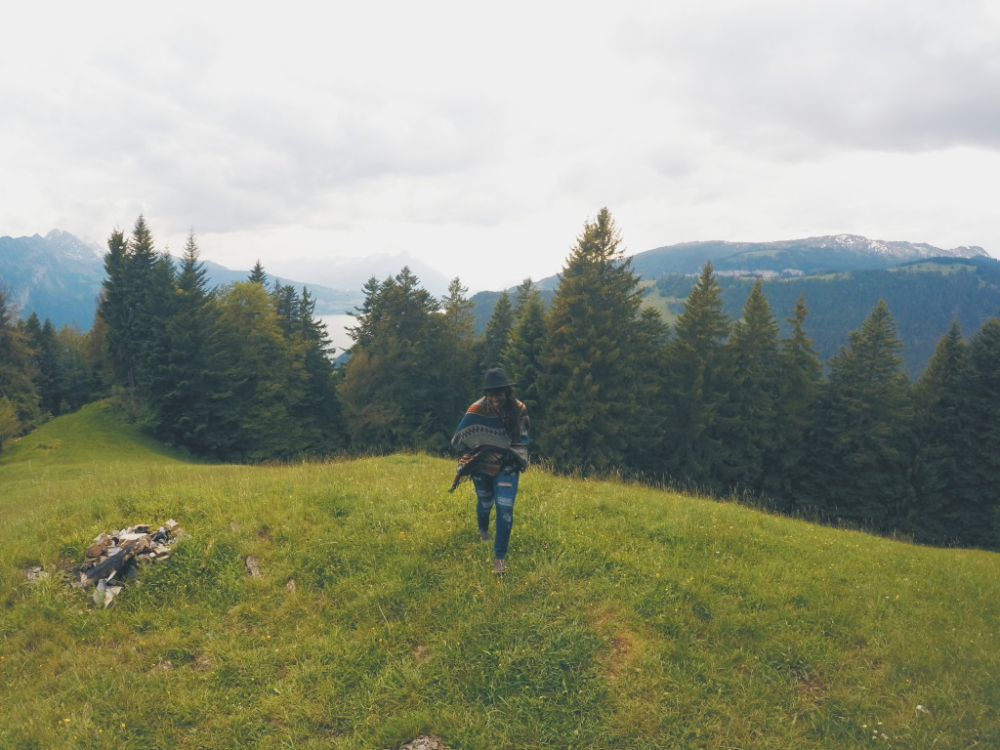

Frequently Asked Questions
While I’d love nothing more than to chat with you guys 1-on-1 about some of the most interesting aspects of life on the road, the reality is, there just isn’t enough time to respond to 100+ daily messages and emails, so I’m hoping this quick list of questions can either address your concern or point you towards more answers! Here we go!
Q: How do you afford to travel?
A: This answer is now completely different than what I would’ve said a year or two ago, because I’m now in a position where I’m paid to travel, write, and take photos of my experiences around the world. This is my job, my lifestyle, and something that has taken many sacrifices, risks, and networking to not only build, but sustain. Inversely, while starting out, I was traveling on a shoestring budget, never having more than Rs.5000 to my name, and on an endless pursuit of one-way tickets to anywhere. But in short, a combination of things afford me this lifestyle that some don’t account for. Not having a mortgage or rent payment already allocates a good portion of money for travel. That, combined with my favorite travel and money-saving apps helped me put a nice chunk of my income towards what I love doing most. When it comes down to it, any traveler will tell you it’s just a matter of budgeting and prioritization. You won’t find anything worth more than 500 in my wardrobe and I sure as hell won’t have had any expensive experiences and material items most people my age spend money on, I spend it on traveling.
A: This answer is now completely different than what I would’ve said a year or two ago, because I’m now in a position where I’m paid to travel, write, and take photos of my experiences around the world. This is my job, my lifestyle, and something that has taken many sacrifices, risks, and networking to not only build, but sustain. Inversely, while starting out, I was traveling on a shoestring budget, never having more than Rs.5000 to my name, and on an endless pursuit of one-way tickets to anywhere. But in short, a combination of things afford me this lifestyle that some don’t account for. Not having a mortgage or rent payment already allocates a good portion of money for travel. That, combined with my favorite travel and money-saving apps helped me put a nice chunk of my income towards what I love doing most. When it comes down to it, any traveler will tell you it’s just a matter of budgeting and prioritization. You won’t find anything worth more than 500 in my wardrobe and I sure as hell won’t have had any expensive experiences and material items most people my age spend money on, I spend it on traveling.

Q: Who takes all your pictures?
A: Before I caved and bought a selfie stick (which yes, I fully accept your judgements), I relied on the expertise of strangers near and far to lend a hand. But more often than not, I’m propping my camera on some rock or ledge and using the self-timer function to get the exact shot I want. It’s a process to master, but I’ve come to love it!
A: Before I caved and bought a selfie stick (which yes, I fully accept your judgements), I relied on the expertise of strangers near and far to lend a hand. But more often than not, I’m propping my camera on some rock or ledge and using the self-timer function to get the exact shot I want. It’s a process to master, but I’ve come to love it!

Q: What’s your biggest travel hack or secret?
A: BE FLEXIBLE! It’s not necessarily a hack, but hear me out. When I’m traveling on my own dime, I only book my trips on one-way tickets, because I know how easy it is for plans to change or things to come up, so I try and go with the flow. Not to mention, a lot of times airlines or train tickets will go up and down depending on whether they need to fill seats, so I try and get a last minute deal on my way back, or re-route my journey towards another place that’s super cheap. It’s a win-win, because I’m exploring for cheap and I’m able to keep traveling onwards. This is also starting to become a well-known trick, but search for flights in private or incognito tabs. Websites and search engines are collecting the cookies of your browsing history and raising flights to build urgency to get you to book the ticket! Don’t get stuck paying more than you need to! Also try and visit super touristy places in the off-season and match your budget with places that allow you to live comfortably on the low.
A: BE FLEXIBLE! It’s not necessarily a hack, but hear me out. When I’m traveling on my own dime, I only book my trips on one-way tickets, because I know how easy it is for plans to change or things to come up, so I try and go with the flow. Not to mention, a lot of times airlines or train tickets will go up and down depending on whether they need to fill seats, so I try and get a last minute deal on my way back, or re-route my journey towards another place that’s super cheap. It’s a win-win, because I’m exploring for cheap and I’m able to keep traveling onwards. This is also starting to become a well-known trick, but search for flights in private or incognito tabs. Websites and search engines are collecting the cookies of your browsing history and raising flights to build urgency to get you to book the ticket! Don’t get stuck paying more than you need to! Also try and visit super touristy places in the off-season and match your budget with places that allow you to live comfortably on the low.